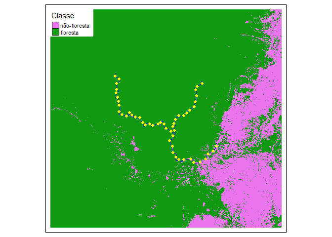

Conjuntos de dados para o ensino de Ecologia de Paisagens.
Datasets for teaching landscape Ecology.
Installation
You can install the development version of eprdados from GitHub with:
Você pode instalar o pacote eprdados através do comando:
# install.packages("remotes")
remotes::install_github("darrennorris/eprdados")Example

This is a basic example which shows you how to make a map with the data in the package:
library(eprdados)
library(tmap)
mapbiomas_2020 <- rast(utm_cover_AP_rio_2020)
# Reclassificação -
# Criar uma nova camada de floresta (novo objeto de raster copiando mapbiomas_2020,
# assim para ter os mesmos coordenados, resolução e extensão)
floresta_2020 <- mapbiomas_2020
# Todos os pixels com valor de 0
values(floresta_2020) <- 0
# Atualizar com valor de 1 quando pixels originais são de floresta (classe 3 e 4)
floresta_2020[mapbiomas_2020==3 | mapbiomas_2020==4] <- 1
# Passo necessario para agilizar o processamento
floresta_2020_modal <- aggregate(floresta_2020,
fact=10,
fun="modal")
# pontos cada 5 km
rio_pontos_31976 <- rio_pontos |>
st_transform(31976)
# linha central de rios
rio_linhacentral_31976 <- rio_linhacentral |>
st_transform(31976)
# Mapa
tm_shape(floresta_2020_modal) +
tm_raster(style = "cat",
palette = c("0" = "#E974ED", "1" ="#129912"), legend.show = FALSE) +
tm_add_legend(type = "fill", labels = c("não-floresta", "floresta"),
col = c("#E974ED", "#129912"), title = "Classe") +
tm_shape(rio_linhacentral_31976) +
tm_lines(col="blue") +
tm_shape(rio_pontos_31976) +
tm_dots(size = 0.2, col = "yellow") +
tm_layout(legend.bg.color="white")Package developed and built using the following guides: